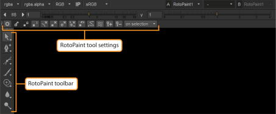

In the RotoPaint node, you can use two toolbars to define the type of stroke/shape you want to start drawing. These toolbars are placed in the Viewer. The vertical RotoPaint toolbar is for selecting the tool you want to use and the horizontal one, RotoPaint tool settings, is for adjusting the currently selected tool’s settings before drawing new strokes/shapes.
NOTE: You can’t use RotoPaint tool settings to adjust an already existing stroke/shape. For any changes you want to make to a stroke/shape after you’ve created one, you can use the controls in the RotoPaint properties panel.
|
 |
| RotoPaint toolbar and tool settings. |
In the RotoPaint toolbar, you can select your stroke/shape tool. The tools are grouped under the toolbar icons. You can click any tool to make it active and view a tool group by right-clicking (or left-clicking and holding) the icon. The tool that is currently selected is highlighted.
TIP: When the Viewer has mouse-over focus, you can also use the S keyboard shortcut to cycle through the modes of the currently selected tool.
In the RotoPaint tool settings on the top of the Viewer, you can define the settings for the tool that you’ve selected. The controls in this toolbar change depending on which tool you have selected at any given time.
TIP: You can hide the toolbars by clicking the hide button next to them. You can also press [ (square bracket) to hide the RotoPaint toolbar and { (curly bracket) to hide the tool settings (and the entire top toolbar of the Viewer).
|
|